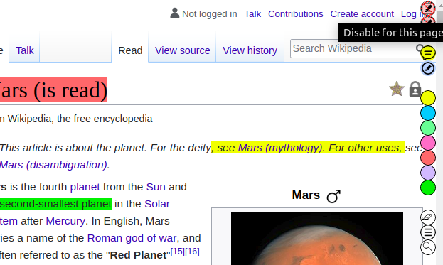
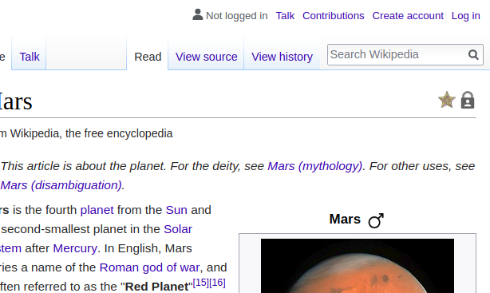

Q: How can I disable the extension for a given page (and domain)?
A: Simply click on the top most red icon. (and refresh the page).
|  | |  |
| Click on top red icon to disable extension for the page | | After disabling and refreshing |
Please note doing so will delete all the annotations for the given page. To disable the extension for the entire domain use the second red icon. To enable the annotations again, click on the extension icon and then again click on the first blue icon.